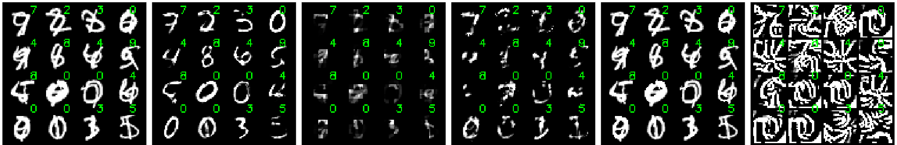
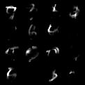
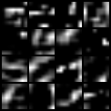

The columns indicate the approaches benchmarked in the paper (Fig. 8), the single image on the second row is the interpretation (mask * input) extracted using the GradCAM approach (arxiv, github).
The single image on the third row is the mask generated from GradCAM.


